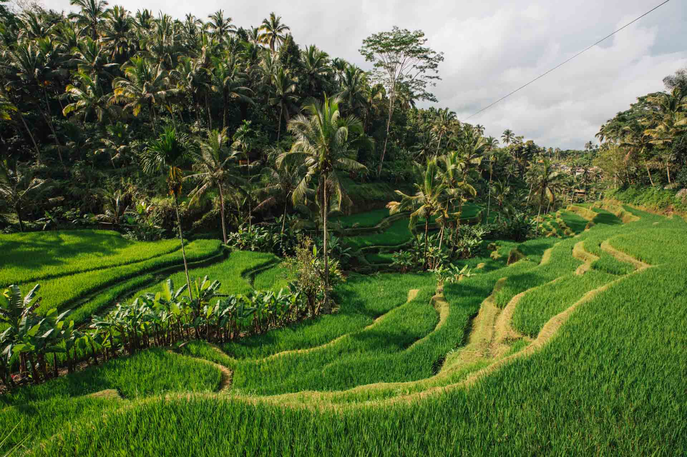

Thailand is cracking. The people, the food, the culture, the nature…I absolutely loved visiting this country. I especially liked the town of Chiang Mai which is famous for its night market (called bazaar). It also has a thai boxing stadium, and of course, many buddhist temples. I remember waking up very early to take a bus to a national park high in the moutains. This park landmark is the Twin Pagodas. I remember it was cold and cloudy up there, which is not normal in Thailand !

Bali was my honeymoon trip, and it was a great memory for my wife and I. The first town we stayed in was Ubud, about one hour from the airport. This town is famous for Hindu temples and monuments, yoga practice, and rice fields. We had great fun riding a bike with a group in the middle of these rice fields although it is very steep to ride!
